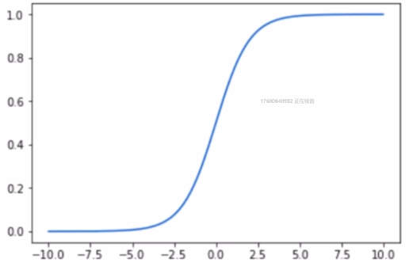
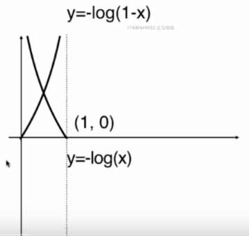

一、逻辑回归综述
先做线性回归，得到预测值$\hat{y}$
$$\hat{y}=\theta^Tx_b,\hat{y}\in(-\infty,+\infty)$$
然后利用$Sigmoid$函数
$$\sigma(t)=\frac{1}{1+e^{-t}}$$

将$\hat{y}$的值域映射到$[0,1]$，用于表示概率，即
$$\hat{p}=\sigma(\hat{y})=\sigma(\theta^Tx_b)==\frac{1}{1+e^{-\theta^Tx_b}},\hat{p}\in(0,1)$$
由于$Sigmoid$函数$\sigma(t)=\frac{1}{1+e^{-t}}$具有如下性质
$$ \begin{cases}
\sigma(t)>0.5 & t>0\
\sigma(t)<0.5 & t<0
\end{cases}$$
并且t越大，$\sigma(t)$越接近于1，t越小，$\sigma(t)$越接近于0（这一点从图像上很容易看出来）.
所以按照以下标准
$$ lable_{pred}=\begin{cases}
1 & \hat{p}>0.5 \
0 & \hat{p}<0.5
\end{cases}$$
便完成了$lable$的分类。
二、求解$\theta$
2.1 寻找损失函数
和线性回归中使用均方误差作为损失函数一样，在逻辑回归中我们也需要一个损失函数$cost$。
在前面我们已经定义了分类标准
$$ lable_{pred}=\begin{cases}
1 & \hat{p}>0.5 \
0 & \hat{p}<0.5
\end{cases}$$
为了统一，将$lable_{pred}$用$\hat{y}$表示。注意，不要和最开始的线性回归的预测值搞混了，我们这里只是为了统一起来，便于读写和记忆。你只要记住从现在开始，$\hat{y}$代表逻辑回归的预测标签就好了。
于是，我们有以下分类标准
$$ \hat{y}=\begin{cases}
1 & \hat{p}>0.5 \
0 & \hat{p}<0.5
\end{cases}$$
则逻辑回归的损失函数$cost$的字面理解如下
$$ cost=\begin{cases}
如果y=1 & p越小，cost越大 \
如果y=0 & p越大，cost越大
\end{cases}$$
这里的$y$代表的是真实标签。
可以这样理解，拿第一个为例，已知我们的真实标签是1，若p越小，则p是更接近于0的(因为p的值域已经被$Sigmoid$函数限定在$(0,1)$了)，这样子的分类结果就犯错了，所以此时的损失应该大些。
将以上思想转换成数学语言，得到
$$ cost=\begin{cases}
-log(\hat{p})& if –y=1 \
-log(1-\hat{p}) & if –y=0
\end{cases}$$

我们可以将上面的函数cost用一个式子来表达，也就是
$$cost=-ylog(\hat{p})-(1-y)log(1-\hat{p})$$
这是对于一个样本点而言，那对于全部样本点，只需要把他们加起来就好了，最后再求平均值，便得到了最终的损失函数
$$J(\theta)=-\frac{1}{m}\sum_{i=1}^my^{(i)}log(\hat{p^{(i)}})+(1-y^{(i)})log(1-\hat{p^{(i)}})$$
其中
$$\hat{p^{(i)}}=\sigma({X_b}^{(i)}\theta)=\frac{1}{1+e^{-{X_b}^{(i)}\theta}}$$
接下来寻找一组$\theta$，使得$J(\theta)$最小。
2.2 梯度下降法求解$\theta$
$J(\theta)$为下凸函数，存在全局最小值，但是$J(\theta)$不存在数学解析解，所以使用梯度下降法求解使得$J(\theta)$最小的一组$\theta$。
只需让$J(\theta)$对$\theta$求导，即可得到梯度
$$\nabla J(\theta)=\frac{1}{m}{X_b}^{T}(\sigma(X_b\theta)-y)$$
然后利用
$$\theta=theta-学习率*\nabla J(\theta)$$
经过多次迭代更新便得到了要求的$\theta$。
到这里，逻辑回归的全部数学原理便介绍完了。